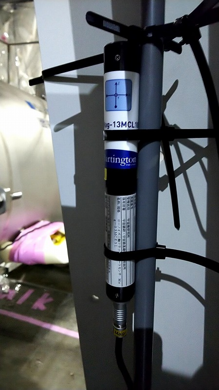

K1:PEM-MAG_BS_BOOTH_BS_X
K1:PEM-MAG_BS_BOOTH_BS_Y
K1:PEM-MAG_BS_BOOTH_BS_Z
- Sensor : Magnetometer (3-axis)
- Observable : Magnetic field [T]
- Typical vable : μ= 4x10-5 T, σ = ? T
- Frequendy range : DC - 7 kHz
- Location : Inside of the white frame for the BS chamber
Sample plot :

Picture :
